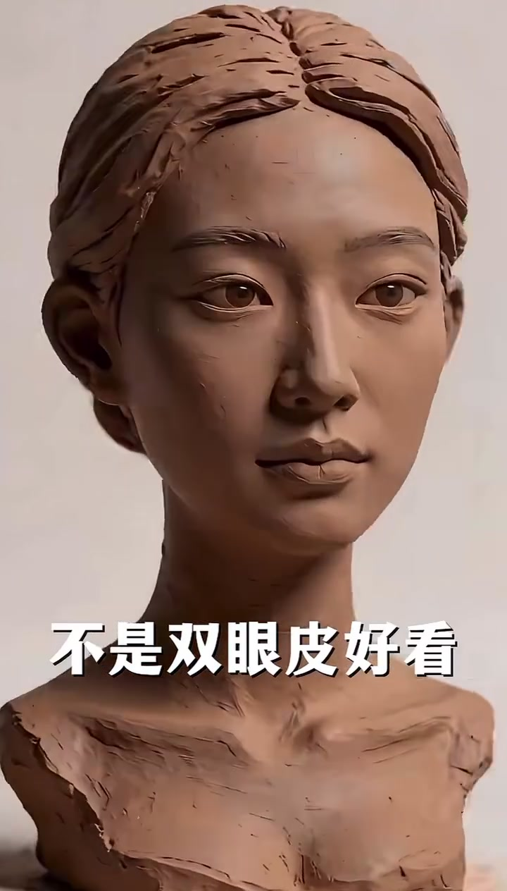
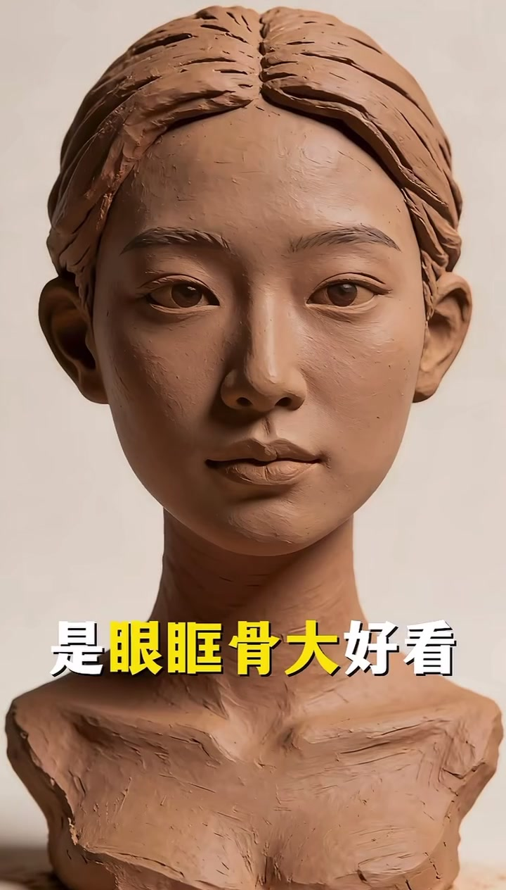
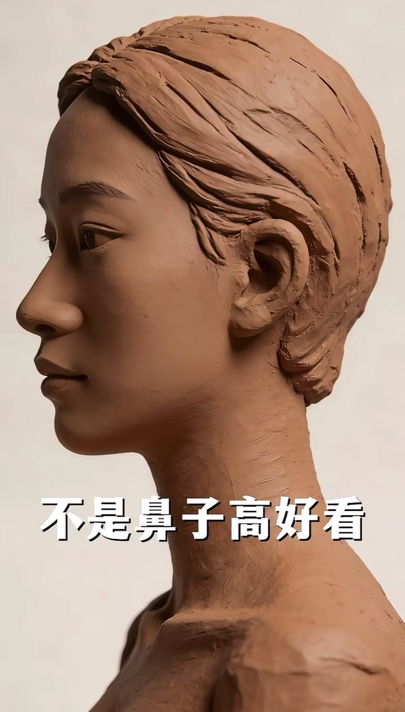
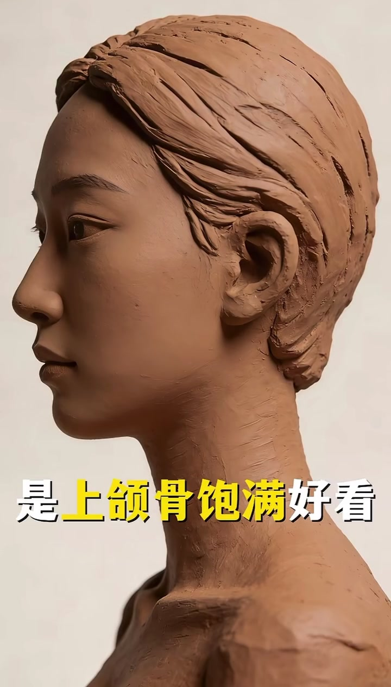
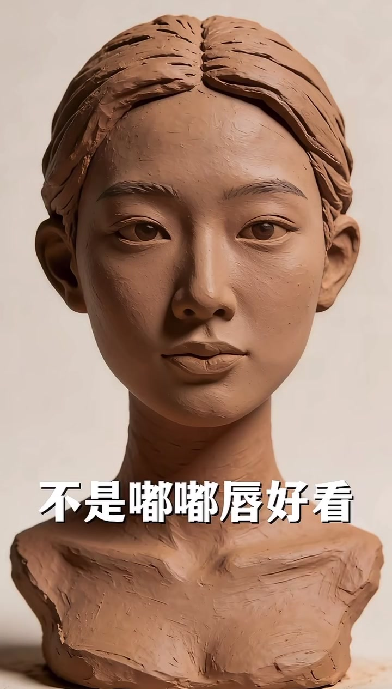
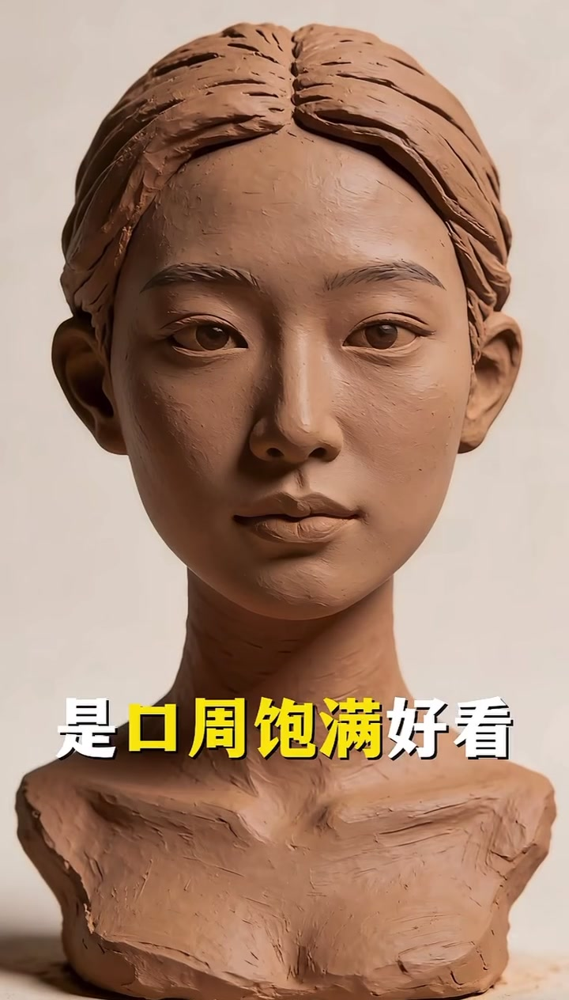
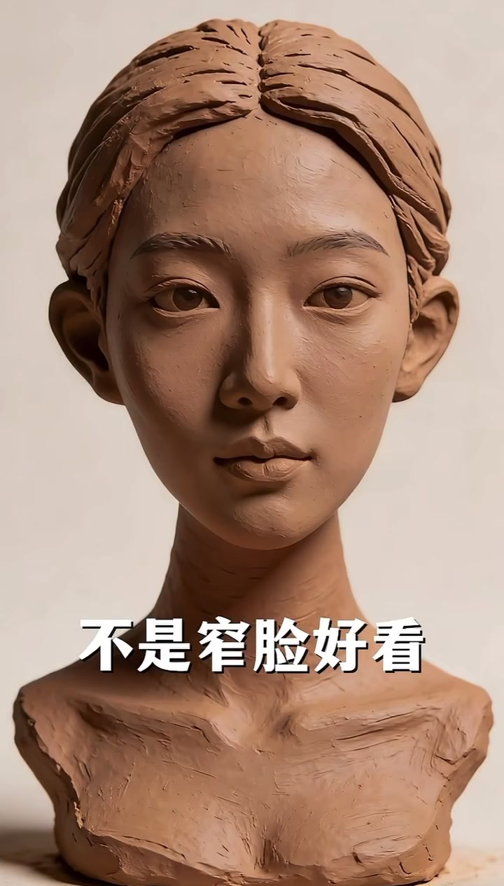
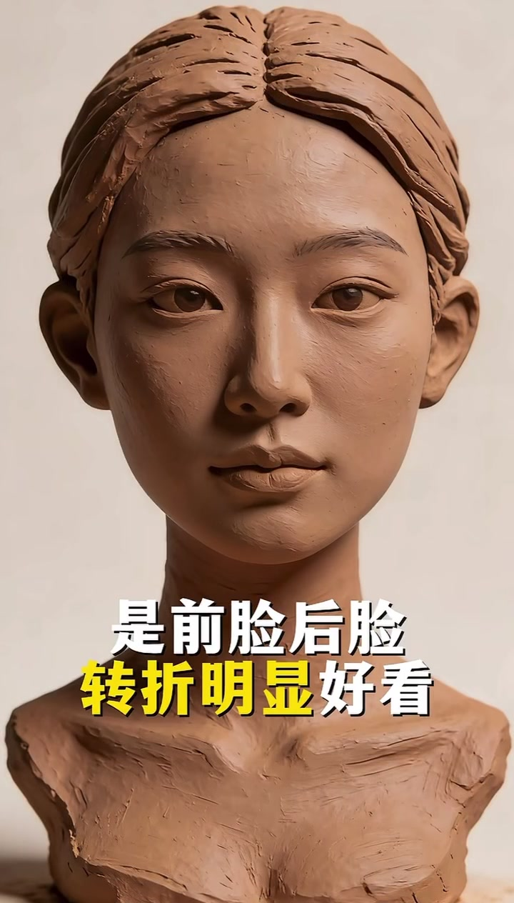

黏土头像当教具，讲「立体度」而不是五官清单
画面始终是一座棕褐色黏土女头像：中分后梳、单眼皮倾向、鼻梁不夸张、下半身肩颈留着明显手塑痕迹。UP 主用叠字做四连否定—肯定，话题标签落在五官分析、影响颜值的因素与面部立体度。语气像口诀，节奏极快。
说明：Whisper 把「眼眶骨 / 上颌骨 / 窄脸」等听成「眼框骨 / 上河骨 / 摘脸」，并输出繁体。下文以可见字幕为准；末尾转录区仍保留原始分段。
第一句：好看的不是双眼皮，是眼眶骨大
正面头像入画，白字先打出否定：「不是双眼皮好看」。镜头几乎不动，下一行黄字强调「眼眶骨」——把讨论从眼皮折叠，拉到眶缘体积与眼周骨骼支撑。
画面字幕：「不是双眼皮好看」「是眼眶骨大好看」

[00:01] 开场否定：先把「双眼皮=好看」这条常见标准拆掉。
Opening negation: first dismantling the common standard “double eyelids = pretty.”

[00:02] 对应肯定：黄字标出「眼眶骨」，把重点放到眶缘体积。
Matching affirmation: yellow text marks “orbital bone,” shifting focus to the rim's volume.
第二句：好看的不是鼻子高，是上颌骨饱满
切到侧脸：鼻梁、耳廓、下颌线被侧光托出来。叠字先否「鼻子高」，再把黄字打在「上颌骨」上——中面部前突与上颌体积，比单纯垫高鼻梁更被强调。
画面字幕：「不是鼻子高好看」「是上颌骨饱满好看」

[00:04] 侧脸否定：鼻梁高度不是本片认定的核心。
Profile negation: nose-bridge height isn't what this video identifies as the core.

[00:05] 侧脸肯定：黄字「上颌骨」，指向中面部饱满度。
Profile affirmation: yellow text “maxilla,” pointing to mid-face fullness.
第三句：好看的不是嘟嘟唇，是口周饱满
回到正面近景。否定「嘟嘟唇」——那种只盯唇珠、唇峰的审美；肯定「口周饱满」，把注意力扩到唇周软组织与口周体积，而不是单独把嘴唇做厚。
画面字幕：「不是嘟嘟唇好看」「是口周饱满好看」

[00:07] 唇部否定：不把「嘟嘟唇」当成独立答案。
Lip negation: “pouty lips” alone isn't the answer.

[00:09] 唇部肯定：黄字「口周」，强调口周区域的整体饱满。
Lip affirmation: yellow text “perioral,” emphasizing overall fullness of the mouth area.
第四句：好看的不是窄脸，是前脸后脸转折明显
最后一组仍用正面，但用侧光把颧颊转折托出来。先否「窄脸」，再两行叠字收束：「是前脸后脸 / 转折明显好看」——把颜值从脸宽数值，改写成正面与侧面体块交界是否清楚。
画面字幕：「不是窄脸好看」「是前脸后脸转折明显好看」

[00:11] 脸型否定：窄脸不是本片的终点标准。
Face-shape negation: a narrow face isn't this video's end standard.

[00:13] 收束肯定：前脸／后脸转折清楚，立体感被推到前台。
Closing affirmation: a clean front/side-face turn, pushing dimensionality to the fore.